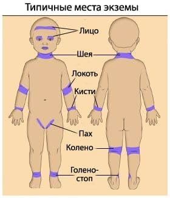
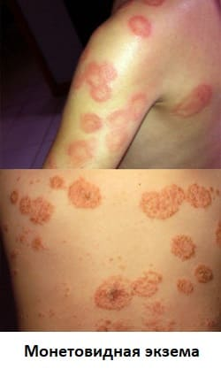
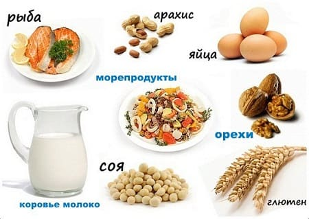

Все родители восхищаются мягкой, гладкой кожей своего младенца. И когда она становится раздраженной и воспаленной, родители готовы на все, чтобы вернуть ее прежнее состояние. Экзема — наиболее распространенное заболевание кожи, встречающееся примерно у 10% детей. Хотя некоторые случаи проходят быстро, другие могут длиться годами, продолжаясь и у взрослых. Вот что вам необходимо знать, чтобы диагностировать, лечить и предупредить экзему у вашего ребенка.
СИМПТОМЫ
Экзема может проявляться по-разному:
Общая сухость кожи по всему телу. Вы скорее почувствуете сухость, чем увидите. Обычно это заметнее на конечностях.
Сухие шероховатые пятна с маленькими белыми прыщами. Вы найдете их россыпью по всему телу.
Красные раздраженные пятна. Экзема поражает некоторые части тела в большей степени, чем другие. У маленьких детей больше поражаются локтевые и подколенные складки, а затем — руки и ноги. У детей старшего возраста и взрослых чаще страдают наружные поверхности локтевых и коленных суставов.
Красные, мокнущие участки кожи при обострениях. Сыпь время от времени будет обостряться, образуя зудящие и даже болезненные участки.

РАЗЛИЧНЫЕ ТИПЫ
Проявления экземы многообразны.
Временная экзема. У некоторых ранее здоровых детей иногда вдруг появляются экземоподобные высыпания, сохраняющиеся на протяжении одной-двух недель. У этих детей раньше не наблюдалось сухости кожи или хронических аллергий. Они впервые контактировали с чем-то, что вызвало сыпь. Этот тип экземы обычно проходит, если избегать контакта с раздражающим агентом и лечить сыпь, и очень редко повторяется.
Классическая хроническая экзема. Если временная экзема сохраняется дольше нескольких недель, у вашего ребенка могут быть генетическая предрасположенность и аллергическая склонность к развитию хронической экземы. У таких детей еще в младенчестве отмечается сухая, легко раздражающаяся кожа, и экзема становится более очевидной, когда ребенок подрастает. У некоторых обострения начинаются еще в младенчестве.
Монетовидная экзема. Это очень умеренная форма, при которой возникает несколько сухих круглых пятен на коже в любом месте. Остальная кожа остается нормальной. Такие пятна легкоизлечимы.
Папулезная экзема. Этот тип экземы проявляется участками небольших красных или белых зудящих папул на разных частях тела, остальная кожа при этом остается неизмененной. Этот тип экземы сложно отличить от других папулезных сыпей, но так как большинство других таких сыпей довольно быстро проходят, то если высыпания сохраняются на протяжении пары месяцев, ставится диагноз папулезной экземы.

ПРИЧИНЫ
Экзема возникает в результате комбинации генетической предрасположенности к сухости и повышенной чувствительности кожи и склонности к аллергиям.
Сухая, зудящая, сверхчувствительная кожа. В то время как большинство детей не реагируют на ежедневное воздействие мыла, грязи, пота, высокой температуры, одежды и всего остального, с чем мы контактируем, кожа ребенка с экземой сверхчувствительна к повседневным раздражителям.
Аллергии. Дети с экземой склонны иметь аллергию на большее количество вещей, чем остальные. Контакт с едой и экологическими аллергенами заставляет кожу вспыхивать в красные, раздраженные пятна. |
Порочный круг. Эти два фактора вызывают непрерывный ежедневный зуд. Когда ребенок чешется, кожа становится все более красной и раздраженной, образуются расчесы. Это увеличивает зуд и болезненность, и круг замыкается.
ЛЕЧЕНИЕ ПЕРВОГО ЭПИЗОДА
Поскольку экзема может стать длительным и неприятным состоянием, важно постараться правильно определить причину раньше, чем ситуация станет хронической и запутанной. Чтобы определить, нет ли очевидной причины, задайте себе следующие вопросы:
Помимо попыток определить причину (если она вообще существует), вы можете также использовать некоторые меры, чтобы прекратить высыпания до того, как они станут хроническими.
Если сыпь сохраняется дольше нескольких недель, возможно, существуют нераспознанные причины и генетическая предрасположенность к хронической экземе. Вы должны будете перейти к более подробному расследованию и конкретизированному лечению.
ЧТО ВЫ МОЖЕТЕ СДЕЛАТЬ
Хотя вы не можете изменить генетическую предрасположенность ребенка к сухости и повышенной чувствительности кожи, вот несколько шагов, которые вы можете предпринять, чтобы улучшить здоровье кожи, минимизировать чувствительность к раздражителям, определить аллергены и уменьшить влияние экземы на жизнь ребенка.
Определите пищевые аллергены. Это самый важный шаг к улучшению прогноза у вашего ребенка. Если вы определите, что какие-либо продукты усиливают экзему, то сможете устранить их из рациона или хотя бы ограничить их количество, обеспечив дальнейшее выздоровление. Некоторым детям этого достаточно. Однако эксперты утверждают, что пищевые аллергии играют роль в развитии только трети всех случаев экземы, так что, возможно, некоторым из вас это покажется бесполезным. Но попытаться все же стоит.
Семь продуктов, которые являются источниками аллергии в 90% случаях:
|
Устраните перечисленные продукты из рациона своего ребенка примерно на месяц. Кормящие мамы должны так же поступить со своим питанием. Младенцев, вскармливаемых молочной смесью на основе коровьего молока, следует перевести на смесь на соевой основе, и наоборот. Если это не помогает, попробуйте гипоаллергенную смесь. У врача также можно сделать анализы на аллергены.

Следите за увлажнением кожи. Сухая кожа — враг детей с экземой, а увлажненная — друг. Увлажнение кожи, возможно, самый важный шаг для уменьшения высыпаний и прерывания порочного круга раздражений и сыпи. Чтобы сохранить кожу здоровой, каждый день делайте следующее:

Избегайте раздражающе действующих на кожу веществ. Вот список наиболее часто встречающихся раздражающих веществ. Вычислите те, что больше всего беспокоят вашего ребенка, и по возможности избегайте их:
Предотвращайте расчесы. Это легче сказать, чем сделать, но важно минимизировать риск возникновения порочного круга «зуд — расчесы — обострение сыпи»:
Пищевые добавки при экземе. Чтобы улучшить состояние кожи ребенка изнутри, добавьте в его рацион эти питательные вещества:
Пробиотики в виде жидкости, порошка или таблеток могут уменьшить проявления аллергии. |
ЧТО МОЖЕТ СДЕЛАТЬ ВРАЧ
Безрецептурные медикаменты. Лекарства очень эффективны для контроля экземы, но лучше, чтобы ребенок не принимал их постоянно. Сосредоточьтесь на вышеперечисленных методах профилактики — это должно помочь уменьшить потребление препаратов. Но не бойтесь использовать лекарства при необходимости. У большинства детей время от времени бывают обострения заболевания, и тогда соответствующее лечение позволит быстро уменьшить длительность и тяжесть состояния.
Если вам приходится использовать один или два из этих способов ежедневно дольше, чем две недели, обратитесь к своему врачу, чтобы узнать, что еще можно предпринять.
Рецептурные препараты. Врач может много сделать для лечения экземы у вашего ребенка. Если у ребенка часто бывают внезапные обострения и безрецептурного лечения для них недостаточно, вы и ваш врач должны составить план лечения и держать рецептурные препараты наготове. Вот самые распространенные:
При тяжелой экземе может потребоваться ежедневное применение одного или двух рецептурных препаратов. Но если состояние не улучшается через несколько месяцев активного лечения, обратитесь к аллергологу или дерматологу для проведения тестов на аллергены.
Бактериальные инфекции. В тяжелых случаях экзематозная сыпь может инфицироваться бактериями, обычно живущими на коже. При этом образуются красные, мокнущие участки, иногда покрытые желтой корочкой. Антибиотики для местного применения могут помочь, но, как правило, чтобы справиться с инфекцией, нужен системный прием антибиотиков.
МОГУТ ЛИ ДЕТИ ПЕРЕРАСТАТЬ ЭКЗЕМУ? К счастью, да. Когда иммунная система ребенка созревает или на протяжении многих лет удается избежать контакта с аллергенами, экзема может уменьшиться или вообще пройти. Некоторым детям, однако, предстоит бороться с экземой и во взрослой жизни. Это невозможно предугадать. Чем лучше заболевание контролируется в детстве, тем больше шансов, что оно пройдет. |
Здоровье ребенка от докторов Сирс / Сирс У. и др.